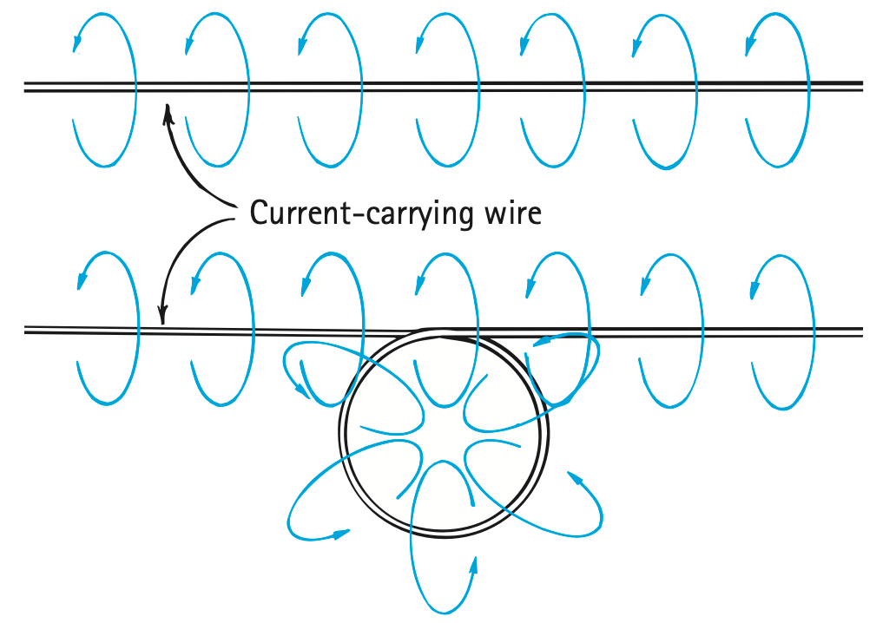

Unit 8.2 · Activity · Electricity and MagnetismProblem 1
Problem 1
DOK 1
1. State the connection between electric current and magnetic fields.
Unit 8.2 · Activity · Electricity and MagnetismSolution 1
Solution 1
DOK 1
1. State the connection between electric current and magnetic fields.
Answer: Electric current—moving electric charge—produces a magnetic field in the space around the conductor.
Unit 8.2 · Activity · Electricity and MagnetismProblem 2
Problem 2
DOK 1
2. Around a long straight wire, how are magnetic-field directions arranged around the wire?
Unit 8.2 · Activity · Electricity and MagnetismSolution 2
Solution 2
DOK 1
2. Around a long straight wire, how are magnetic-field directions arranged around the wire?
Answer: The magnetic-field direction forms circles centered on the long straight wire. Reversing current reverses the circular direction.
Unit 8.2 · Activity · Electricity and MagnetismProblem 3
Problem 3
DOK 1
3. What should happen to a nearby compass when current in a wire is switched on?
Unit 8.2 · Activity · Electricity and MagnetismSolution 3
Solution 3
DOK 1
3. What should happen to a nearby compass when current in a wire is switched on?
Answer: The compass should rotate/deflect and align with the local magnetic field produced by the current.
Unit 8.2 · Activity · Electricity and MagnetismProblem 4
Problem 4
DOK 1
4. What is a solenoid in terms of wire shape and current?
Unit 8.2 · Activity · Electricity and MagnetismSolution 4
Solution 4
DOK 1
4. What is a solenoid in terms of wire shape and current?
Answer: A solenoid is a coil made of many turns of current-carrying wire.
Unit 8.2 · Activity · Electricity and MagnetismProblem 5
Problem 5
DOK 1
5. Why are electricity and magnetism not treated as completely unrelated phenomena?
Unit 8.2 · Activity · Electricity and MagnetismSolution 5
Solution 5
DOK 1
5. Why are electricity and magnetism not treated as completely unrelated phenomena?
Answer: They are connected because electric current produces magnetic fields, and magnetic effects can be detected around current-carrying conductors.
Unit 8.2 · Activity · Electricity and MagnetismProblem 6
Problem 6
DOK 2
6. Use the wire-and-loop field figure to compare the field pattern around the straight segment with the pattern through the loop. Identify one similarity and one difference.

Unit 8.2 · Activity · Electricity and MagnetismSolution 6
Solution 6
DOK 2
6. Use the wire-and-loop field figure to compare the field pattern around the straight segment with the pattern through the loop. Identify one similarity and one difference.
Answer: Both patterns surround current-carrying wire and have a definite direction. Around the straight segment the field wraps in circles; through the loop the contributions curve and combine into a stronger organized field through the loop’s interior.
Unit 8.2 · Activity · Electricity and MagnetismProblem 7
Problem 7
DOK 2
7. Three compasses are placed at different positions around a current-carrying wire. Explain how their orientations could be used to sketch the circular field pattern.
Unit 8.2 · Activity · Electricity and MagnetismSolution 7
Solution 7
DOK 2
7. Three compasses are placed at different positions around a current-carrying wire. Explain how their orientations could be used to sketch the circular field pattern.
Answer: Draw each compass needle tangent to the local field direction at its position. Connecting those tangent directions around the wire produces circular field lines centered on the wire.
Unit 8.2 · Activity · Electricity and MagnetismProblem 8
Problem 8
DOK 2
8. A current loop is reshaped into several nearby turns without changing the current. Explain why the resulting coil can have a stronger organized field through its interior.
Unit 8.2 · Activity · Electricity and MagnetismSolution 8
Solution 8
DOK 2
8. A current loop is reshaped into several nearby turns without changing the current. Explain why the resulting coil can have a stronger organized field through its interior.
Answer: Each turn produces a magnetic field. With several nearby turns carrying current in the same sense, their interior field contributions reinforce, producing a stronger, more organized central field.
Unit 8.2 · Activity · Electricity and MagnetismProblem 9
Problem 9
DOK 2
9. A student says the magnetic field exists only inside the metal wire. Use compass evidence to explain why that model is incomplete.
Unit 8.2 · Activity · Electricity and MagnetismSolution 9
Solution 9
DOK 2
9. A student says the magnetic field exists only inside the metal wire. Use compass evidence to explain why that model is incomplete.
Answer: The model is incomplete because a compass can deflect while separated from the wire. The current-produced magnetic field extends through the surrounding space, not only inside the metal.
Unit 8.2 · Activity · Electricity and MagnetismProblem 10
Problem 10
DOK 2
10. Current in a wire is turned off while a nearby permanent magnet stays in place. Explain which magnetic effect disappears and which can remain.
Unit 8.2 · Activity · Electricity and MagnetismSolution 10
Solution 10
DOK 2
10. Current in a wire is turned off while a nearby permanent magnet stays in place. Explain which magnetic effect disappears and which can remain.
Answer: The current-produced field of the wire disappears when current stops. The nearby permanent magnet can still produce its own magnetic field.
Unit 8.2 · Activity · Electricity and MagnetismProblem 11
Problem 11
DOK 3
11. A student observes compass deflection near a closed circuit and claims the battery is acting like a permanent bar magnet. Evaluate the claim and give a better current-based explanation.
Unit 8.2 · Activity · Electricity and MagnetismSolution 11
Solution 11
DOK 3
11. A student observes compass deflection near a closed circuit and claims the battery is acting like a permanent bar magnet. Evaluate the claim and give a better current-based explanation.
Answer: The battery is not best modeled as a permanent bar magnet causing the effect. The closed circuit allows charge to move; that current produces the magnetic field that deflects the compass.
Unit 8.2 · Activity · Electricity and MagnetismProblem 12
Problem 12
DOK 3
12. A coil and a straight wire carry the same current. Explain why shape matters to the spatial field pattern even though both fields come from moving charge.
Unit 8.2 · Activity · Electricity and MagnetismSolution 12
Solution 12
DOK 3
12. A coil and a straight wire carry the same current. Explain why shape matters to the spatial field pattern even though both fields come from moving charge.
Answer: Shape controls how the field contributions from different parts of the current path are arranged in space. A straight wire gives a circular pattern around the wire; a coil lets many loop fields reinforce through the interior.
Unit 8.2 · Activity · Electricity and MagnetismProblem 13
Problem 13
DOK 1
13. A current-carrying loop produces a magnetic field because
the wire has north-only atoms
the loop is circular even with no current
the loop blocks gravity
charges are moving through the loop
the battery adds magnetic domains to empty space
Unit 8.2 · Activity · Electricity and MagnetismSolution 13
Solution 13
DOK 1
13. A current-carrying loop produces a magnetic field because
the wire has north-only atoms
the loop is circular even with no current
the loop blocks gravity
charges are moving through the loop
the battery adds magnetic domains to empty space
Answer: D — charges are moving through the loop Work / rationale: Moving charge is electric current, and current in the loop produces a magnetic field.
Unit 8.2 · Activity · Electricity and MagnetismProblem 14
Problem 14
DOK 2
14. What happens to nearby compass orientations when the current in a wire is turned off, assuming no other nearby magnets?
The deflection must increase.
The wire retains the same current field forever.
The current-produced deflection disappears.
The compass becomes a permanent electromagnet.
The compass loses its poles.
Unit 8.2 · Activity · Electricity and MagnetismSolution 14
Solution 14
DOK 2
14. What happens to nearby compass orientations when the current in a wire is turned off, assuming no other nearby magnets?
The deflection must increase.
The wire retains the same current field forever.
The current-produced deflection disappears.
The compass becomes a permanent electromagnet.
The compass loses its poles.
Answer: C — The current-produced deflection disappears. Work / rationale: When current stops, the field produced by that current stops, so its compass deflection disappears.
Unit 8.2 · Activity · Electricity and MagnetismProblem 15
Problem 15
DOK 2
15. Why can several turns in a coil produce a stronger central magnetic effect than one loop?
The fields from nearby turns can reinforce one another.
The turns create isolated north poles.
The current stops moving in a coil.
Each turn creates extra energy.
More turns remove the need for current.
Unit 8.2 · Activity · Electricity and MagnetismSolution 15
Solution 15
DOK 2
15. Why can several turns in a coil produce a stronger central magnetic effect than one loop?
The fields from nearby turns can reinforce one another.
The turns create isolated north poles.
The current stops moving in a coil.
Each turn creates extra energy.
More turns remove the need for current.
Answer: A — The fields from nearby turns can reinforce one another. Work / rationale: Nearby turns carry current in similar geometry, so their fields can add through the coil interior.
Unit 8.2 · Activity · Electricity and MagnetismProblem 16
Problem 16
DOK 1
16. Which statement is most accurate about the field around a current-carrying wire?
It extends through space around the wire.
It appears only if the wire is a permanent magnet.
It points only in the current direction.
It exists only inside the copper.
It has no direction.
Unit 8.2 · Activity · Electricity and MagnetismSolution 16
Solution 16
DOK 1
16. Which statement is most accurate about the field around a current-carrying wire?
It extends through space around the wire.
It appears only if the wire is a permanent magnet.
It points only in the current direction.
It exists only inside the copper.
It has no direction.
Answer: A — It extends through space around the wire. Work / rationale: A current-produced field extends into the surrounding space and can be detected outside the conductor.
Unit 8.2 · Activity · Electricity and MagnetismProblem 17
Problem 17
DOK 2
17. A compass detects a magnetic field because
it emits a magnetic field only after heating
its mass changes with current
it absorbs electrons from the wire
it measures voltage numerically
its magnetic needle experiences a turning effect and aligns with the local field
Unit 8.2 · Activity · Electricity and MagnetismSolution 17
Solution 17
DOK 2
17. A compass detects a magnetic field because
it emits a magnetic field only after heating
its mass changes with current
it absorbs electrons from the wire
it measures voltage numerically
its magnetic needle experiences a turning effect and aligns with the local field
Answer: E — its magnetic needle experiences a turning effect and aligns with the local field Work / rationale: A compass needle is itself magnetic and turns to align with the local field.
Unit 8.2 · Activity · Electricity and MagnetismProblem 18
Problem 18
DOK 2
18. If two otherwise identical coils carry currents in opposite directions, their field orientation should
be identical in direction everywhere
vanish because coils cannot be magnetic
reverse relative to one another
depend only on wire color
become electric rather than magnetic
Unit 8.2 · Activity · Electricity and MagnetismSolution 18
Solution 18
DOK 2
18. If two otherwise identical coils carry currents in opposite directions, their field orientation should
be identical in direction everywhere
vanish because coils cannot be magnetic
reverse relative to one another
depend only on wire color
become electric rather than magnetic
Answer: C — reverse relative to one another Work / rationale: Reversing current reverses the direction of the magnetic field produced by the coil.
Unit 8.2 · Activity · Electricity and MagnetismProblem 19
Problem 19
DOK 2
19. What feature distinguishes a coil from a single straight current-carrying wire?
a straight wire has no field
a coil contains no moving charge
many loops place current paths so their fields combine
a coil requires a permanent north-only pole
a coil has only one magnetic field point
Unit 8.2 · Activity · Electricity and MagnetismSolution 19
Solution 19
DOK 2
19. What feature distinguishes a coil from a single straight current-carrying wire?
a straight wire has no field
a coil contains no moving charge
many loops place current paths so their fields combine
a coil requires a permanent north-only pole
a coil has only one magnetic field point
Answer: C — many loops place current paths so their fields combine Work / rationale: A coil has many nearby current loops whose field contributions can combine.
Unit 8.2 · Activity · Electricity and MagnetismProblem 20
Problem 20
DOK 3
20. Which statement best captures evidence for electromagnetism?
Changing whether charge flows changes the magnetic effect detected nearby.
Magnetic fields can exist only inside batteries.
All electric charges are permanent magnets.
Only iron can carry current.
Magnets always touch objects they affect.
Unit 8.2 · Activity · Electricity and MagnetismSolution 20
Solution 20
DOK 3
20. Which statement best captures evidence for electromagnetism?
Changing whether charge flows changes the magnetic effect detected nearby.
Magnetic fields can exist only inside batteries.
All electric charges are permanent magnets.
Only iron can carry current.
Magnets always touch objects they affect.
Answer: A — Changing whether charge flows changes the magnetic effect detected nearby. Work / rationale: Compass deflection changing when current is switched on/off is direct evidence connecting current and magnetism.